2.4. 双聚类
Biclustering 可以使用 sklearn.cluster.bicluster 模块。 Biclustering 算法对数据矩阵的行列同时进行聚类。 同时对行列进行聚类称之为 biclusters。 每一次聚类都会通过原始数据矩阵的一些属性确定一个子矩阵。
例如, 一个矩阵 (10, 10) , 一个 bicluster 聚类，有三列二行，就是一个子矩阵 (3, 2)
>>> import numpy as np
>>> data = np.arange(100).reshape(10, 10)
>>> rows = np.array([0, 2, 3])[:, np.newaxis]
>>> columns = np.array([1, 2])
>>> data[rows, columns]
array([[ 1, 2],
[21, 22],
[31, 32]])
为了可视化， 给定一个 bicluster 聚类，数据矩阵的行列可以重新分配，使得 bi-cluster 是连续的。
算法在如何定义 bicluster 方面有一些不同，常见类型包括：
- 不变的 values , 不变的 rows, 或者不变的 columns。
- 异常高的或者低的值。
- 低方差的子矩阵。
- 相关的 rows 或者 columns。
算法在分配给 bicluster 行列的方式不同, 会导致不同的 bicluster 结构。 当行和列分成分区时，会发生对角线或者棋盘结构。
如果每一行和每一列同属于一种 bicluster ,就重新排列数据矩阵的行和列,会使得 bicluster 呈现对角线。 下面是一个例子，此结构的biclusters 具有比其他行列更高的平均值:

在棋盘结构的例子中, 每一行属于所有的列类别, 每一列属于所有的行类别。 下面是一个例子，每个 bicluster 中的值差异较小:

在拟合模型之后， 可以在 rows_ 和 columns_ 属性中找到行列 cluster membership 。 rows_[i] 是一个二进制的向量， 就是属于 bicluster i 的一行。 同样的, columns_[i] 就表示属于 bicluster i 的列。
一些模块也有 row_labels_ 何 column_labels_ 属性。 这些模块对行列进行分区, 例如对角线或者棋盘 bicluster 结构。
Note
Biclustering 在不同的领域有很多其他名称，包括 co-clustering, two-mode clustering, two-way clustering, block clustering, coupled two-way clustering 等.有一些算法的名称，比如 Spectral Co-Clustering algorithm, 反应了这些备用名称。
2.4.1. Spectral Co-Clustering
SpectralCoclustering算法找到的 bicluster 的值比相应的其他行和列更高。
每一个行和列都只属于一个 bicluster, 所以重新分配行和列，使得分区连续显示对角线上的 high value:
Note
算法将输入的数据矩阵看做成二分图：该矩阵的行和列对应于两组顶点，每个条目对应于行和列之间的边，该算法近似的进行归一化，对图进行切割，找到更重的子图。
2.4.1.1. 数学公式
找到最优归一化剪切的近似解，可以通过图形的 Laplacian 的广义特征值分解。 通常这意味着直接使用 Laplacian 矩阵. 如果原始数据矩阵  有形状
有形状  , 则对应的 bipartite 图的 Laplacian 矩阵具有形状 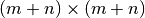。 但是, 在这种情况直接使用 , 因为它更小，更有作用。
, 则对应的 bipartite 图的 Laplacian 矩阵具有形状 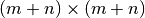。 但是, 在这种情况直接使用 , 因为它更小，更有作用。
输入矩阵 被预处理如下:

 是
是  对角线矩阵，和 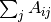 相同，
对角线矩阵，和 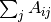 相同，  是
是  的对角吸纳矩阵，等同于
的对角吸纳矩阵，等同于  。
。
奇异值分解, 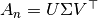 , 提供了 行列的分区. 左边的奇异值向量给予行分区，右边的奇异值向量给予列分区。
 奇异值向量从第二个开始, 提供所需的分区信息。 这些用于形成矩阵 :<cite>Z</cite>:
奇异值向量从第二个开始, 提供所需的分区信息。 这些用于形成矩阵 :<cite>Z</cite>:

 的列是
的列是  , 和
, 和  相似 。
相似 。
然后  的 rows 通过使用 k-means 进行聚类.
的 rows 通过使用 k-means 进行聚类. n_rows 标签提供行分区, 剩下的 n_columns 标签 提供 列分区。
例子:
- A demo of the Spectral Co-Clustering algorithm: 如何用 bicluster 数据矩阵并应用。
- Biclustering documents with the Spectral Co-clustering algorithm:一个在 20 个新闻组数据集中发现 biclusters 的例子
参考文献:
- Dhillon, Inderjit S, 2001. Co-clustering documents and words using bipartite spectral graph partitioning.
2.4.2. Spectral Biclustering
SpectralBiclustering算法假设输入的数据矩阵具有隐藏的棋盘结构。 具有这种结构的矩阵的行列 可能被分区，使得在笛卡尔积中的 大部分 biclusters 的 row clusters 和 column cluster 是近似恒定的。
例如，如果有两个row 分区和三个列分区，每一行属于三个 bicluster ，每一列属于两个 bicluster。
这个算法划分矩阵的行和列，以至于提供一个相应的块状不变的棋盘矩阵，近似于原始矩阵。
2.4.2.1. 数学表示
输入矩阵 先归一化，使得棋盘模式更明显。有三种方法:
- 独立的行和列归一化, as in Spectral Co-Clustering. 这个方法使得行和一个常数相加，列和变量相加。
Bistochastization: 重复行和列归一化直到收敛。该方法使得行和列都相加
相同的常数。
Log 归一化: 计算数据矩阵的对数
 . 列就是
. 列就是  , 行就是
, 行就是  , 总体上来看
, 总体上来看  of
of  被计算的. 最后矩阵通过下面的公式计算
被计算的. 最后矩阵通过下面的公式计算

归一化后，首先少量的奇异值向量被计算，只是在 Spectral Co-Clustering 算法中。
如果使用 log 归一化，则所有的奇异向量都是有意义的。但是, 如果是独立的归一化或双曲线化 被使用，第一个奇异矢量,  和
和  。 会被丢弃。 从现在开始, “first” 奇异值向量与
。 会被丢弃。 从现在开始, “first” 奇异值向量与  和 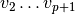 相关，除了日志归一化的情况。
和 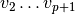 相关，除了日志归一化的情况。
给定这些奇异值向量， 将他们排序，通过分段常数向量保证最佳近似。 使用一维 k-means 找到每个向量的近似值 并使用欧几里得距离得分。 Some subset of 最好的左右奇异值向量的子集被选择。 下一步, 数据预计到这个最佳子集的奇异向量和聚类。
例如，如果 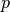 奇异值向量被计算，最好按照描述找到  ， 其中 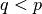。 列为，the 最佳左奇异向量的矩阵, 并且 对于右边是类似的. 要划分行, 将 的 投影到 维空间:
， 其中 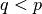。 列为，the 最佳左奇异向量的矩阵, 并且 对于右边是类似的. 要划分行, 将 的 投影到 维空间:  。
。  行 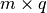 矩阵的行作为采样和使用 k-means 的聚类处理产生行标签。 类似地，将列投影到 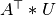 ，并且对
行 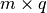 矩阵的行作为采样和使用 k-means 的聚类处理产生行标签。 类似地，将列投影到 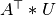 ，并且对  矩阵进行聚类得到列标签。
矩阵进行聚类得到列标签。
示例:
- A demo of the Spectral Biclustering algorithm: 一个简单的例子 显示如何生成棋盘矩阵和 bicluster
.
参考文献:
- Kluger, Yuval, et. al., 2003. Spectral biclustering of microarray data: coclustering genes and conditions.
2.4.3. Biclustering 评测
有两种评估双组分结果的方法：内部和外部。 诸如群集稳定性等内部措施只依赖于数据和结果本身。 目前在scikit-learn中没有内部的二集群措施。外部措施是指外部信息来源，例如真正的解决方案。 当使用真实数据时，真正的解决方案通常是未知的，但是，由于真正的解决方案是已知的，因此人造数据的双重分析可能对于评估算法非常有用。
为了将一组已发现的双组分与一组真正的双组分进行比较， 需要两个相似性度量：单个双色团体的相似性度量，以及将这些个体相似度结合到总分中的方法。
为了比较单个双核，已经采用了几种措施。现在，只有Jaccard索引被实现：

和 是 biclusters, 是交叉点的元素的数量。
Jaccard 索引 达到最小值0，当 biclusters 不重叠的时候，并且当他们相同干的时候，最大值为1。
有些方法已经开发出来，用来比较两个 biclusters 的数据集。 从现在开始 之后 consensus_score (Hochreiter et. al., 2010) 是可以用:
- 使用 Jaccard 索引或类似措施，计算 biclusters 的 bicluster 相似性。
- 以一对一的方式将 bicluster 分从一组分配给另一组，以最大化其相似性的总和。该步骤使用匈牙利算法执行。
- 相似性的最终总和除以较大集合的大小。
最小共识得分为0，发生在所有 biclusters 完全不相似时。当两组 biclusters 相同时，最大分数为1。
参考文献:
- Hochreiter, Bodenhofer, et. al., 2010. FABIA: factor analysis for bicluster acquisition.